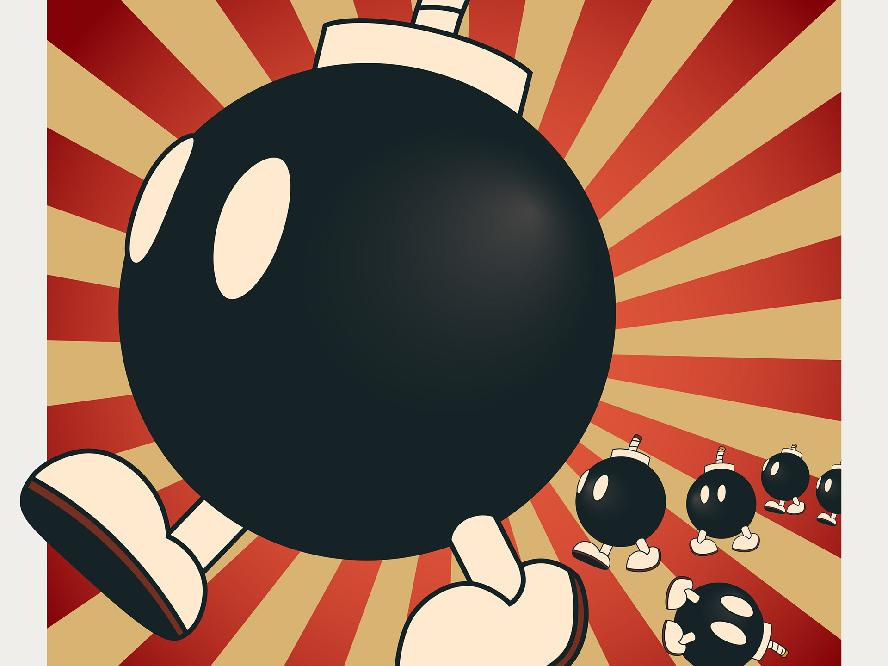

About the Maker
Hi! I’m Casper. Born in '97 in Delft, currently navigating the digital workshop of Communication & Multimedia Design at the Hogeschool Utrecht.
My work is a cross-pollination of two worlds. Where I used to get my hands dirty in woodworking, electronics, and horticulture, I now channel that same "makers-mindset" into digital solutions. Whether designing sharp logos, building interactive installations, or tinkering in my own Linux AI homelab, I’m only satisfied when the craft feels right. I thrive on that sweet spot where analog craftsmanship meets digital innovation.
Beyond my studies, I manage a digital gaming community, where I treat the digital landscape with the same precision I apply to my physical furniture projects. I’m a tinkerer at heart, with a mouse in one hand and a soldering iron (figuratively) in the other.
The Workbench

Generation Plastic Soup
2025 – A critical look at our waste culture, shaped through digital media.

Street Fresh
2024 – Typography and branding that breathes raw street energy.

Samen Spelen
2024 – An interactive project exploring the power of connection.

Grijpmachine
2024 – Mechanical interface design study.

Kodak
2024 – Analog revival study.

Bomby Bird
2024 – Game mechanics & interaction design.

Picknicken met Sophie
2023 – Experience design.

OSRS Kerst
2023 – Digital community event architecture.

De Grinch
2023 – Narrative spatial design.

Vechtclub XL
2023 – Visual identity & community growth.

Hu Begeleidt
2022 – Institutional design.

Dan maar hier!
2022 – Conceptual storytelling.
Let's Connect
I am always open to discussing new projects, technical collaborations, or simply sharing ideas about craftsmanship and technology.